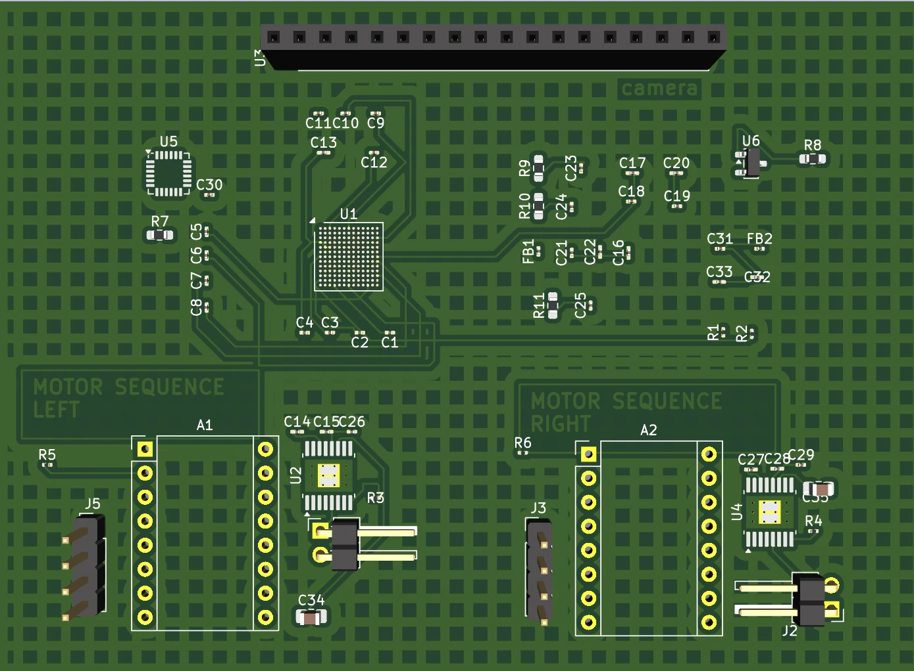
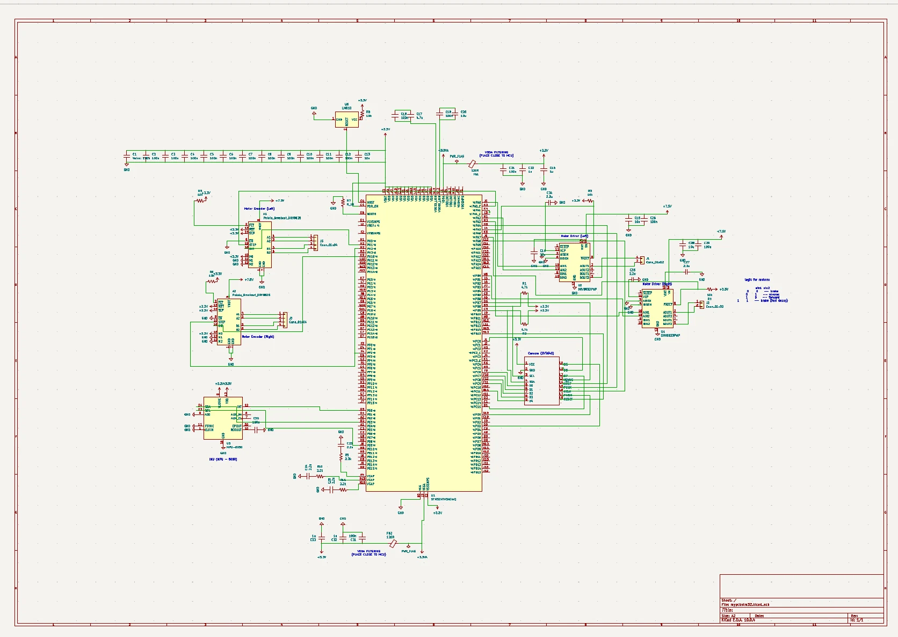
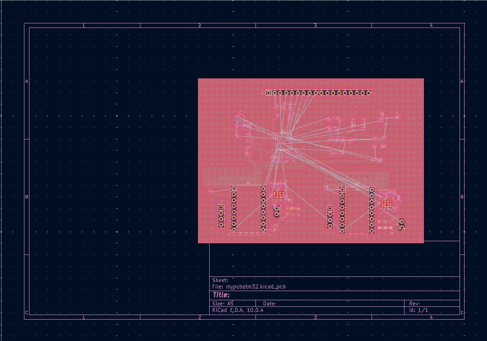

01 / AUTONOMOUS SYSTEMS
SAE AERO
A ROBOT THAT HAS TO FIGURE OUT WHERE IT IS.
I work on the autonomous systems side of Texas A&M’s SAE Aero team. Our payload gets dropped from a plane, lands inside an 8 ft × 8 ft zone, and has to navigate on its own before reconnecting with the aircraft.
My work has touched the PCB, sensors, motor control, embedded C++, camera research, and navigation. The part I like most is that every decision affects something else. A sensor choice changes the software. A power decision changes the board. An algorithm is useless if the hardware cannot give it the data it needs.


